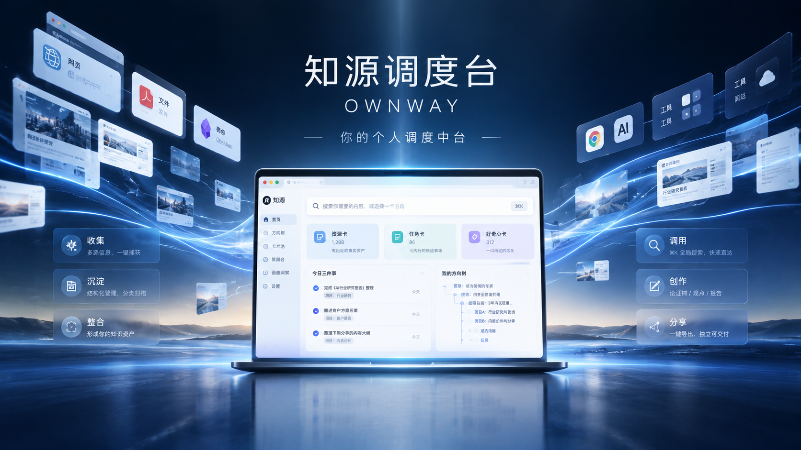
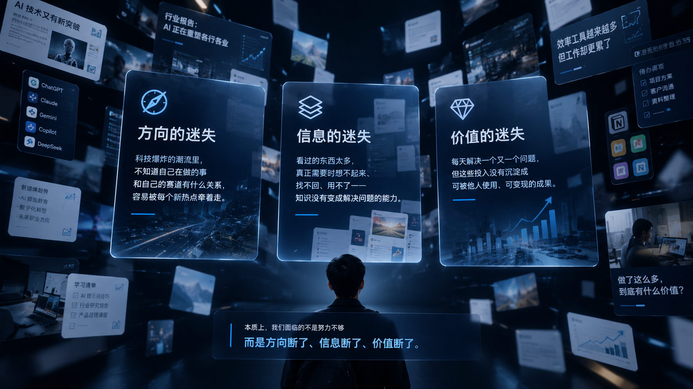
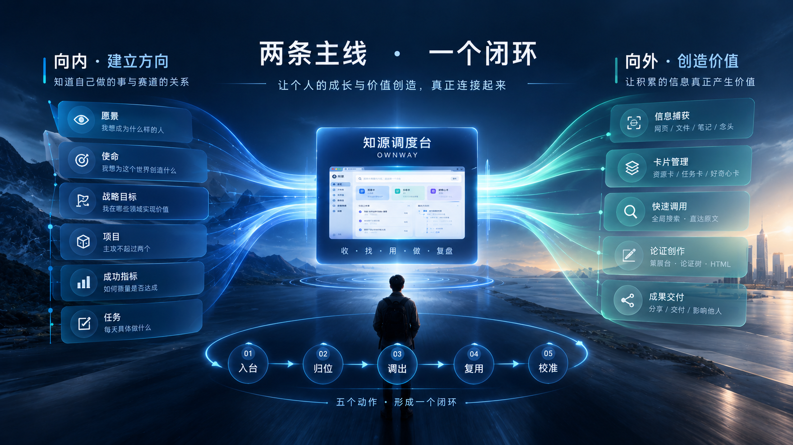
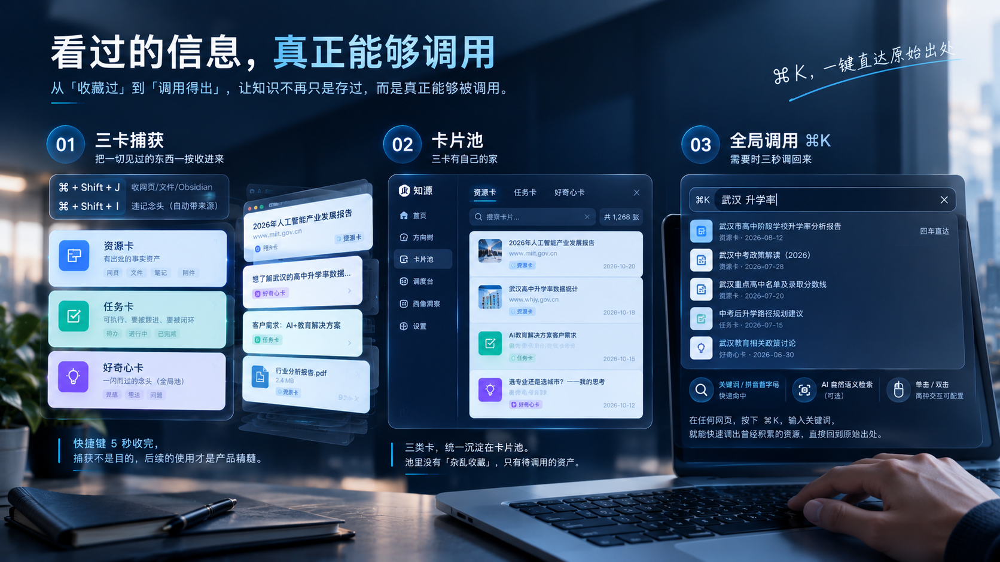
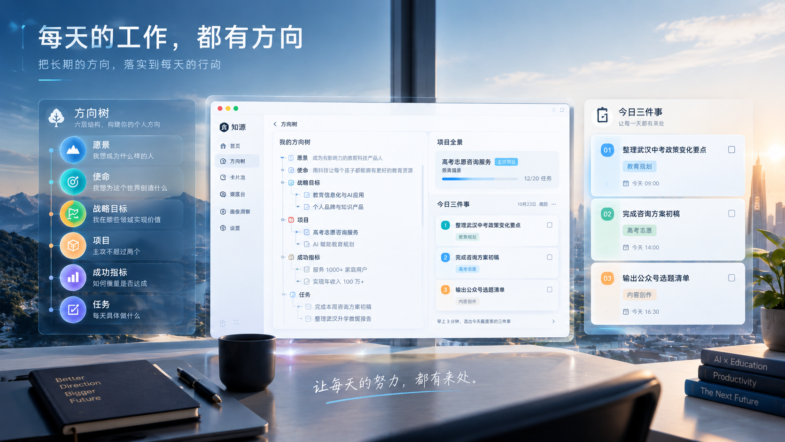
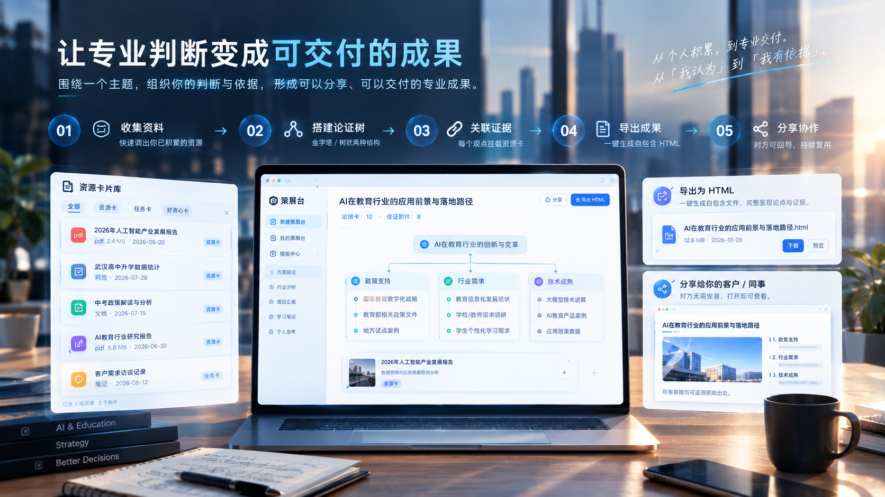
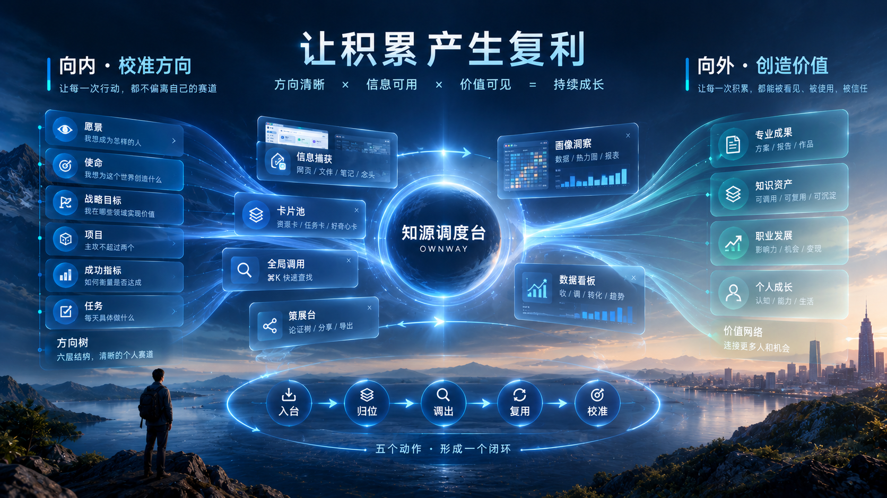
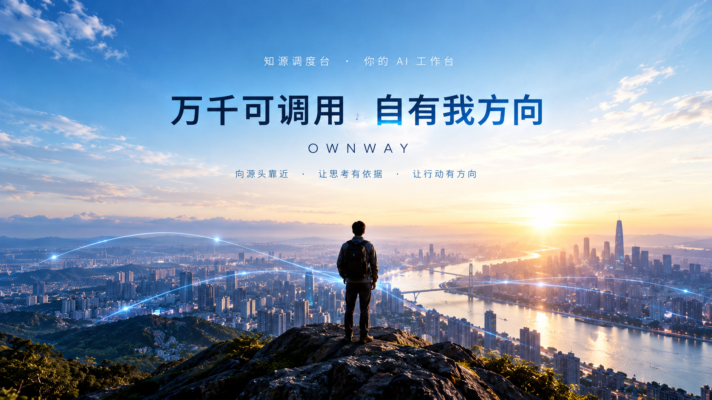

方向的迷失
热点层出不穷，每天都很忙，却不确定正在做的事与自己的赛道有什么关系。
让今天的行动，挂回长期方向。知源调度台 OWNWAY，你在浏览器里的个人调度中台。
围绕自己的方向，组织探索、调用与成果，让每一天的行动都有来处。

信息爆炸、工具爆炸、AI 焦虑。真正困扰知识工作者的，是方向、信息与价值无法彼此承接。

热点层出不穷，每天都很忙，却不确定正在做的事与自己的赛道有什么关系。
让今天的行动，挂回长期方向。见过很多、收藏很多，真正需要时却想不起来、找不回、用不了。
让见过的信息，成为可调用的资产。持续解决自己的问题，投入却没有沉淀成可被他人看见、使用的成果。
让个人积累，进入专业交付。知源不承诺替你走，而是帮助你看清方向、调出所需、形成成果。
两条主线不是两套工具，而是同一个成长价值闭环：方向让积累有选择，成果让方向得到反馈。

把长期方向拆解为目标与行动，让每天做的事与个人赛道建立联系。
入台、归位、调出、复用、校准。不是一次性整理，而是可以持续循环的工作方式。

浏览网页、阅读文件或产生念头时，将资源、任务与好奇心分别收录到知源。
六层目标与行动结构，连接愿景、使命、战略目标、项目、成功指标与任务。今日三件事，只保留当下最重要的行动。

资源卡、任务卡、好奇心卡统一沉淀。需要时，在任意网页通过全局搜索找回已收录条目，并回到原始出处。
搜索范围是已收录条目，不是全盘全文检索。
在策展台围绕主题组织判断与论证，为观点关联资源卡，将个人积累形成可分享、可交付的专业成果。

中心论点下连接三个分论点；点击不同节点，查看各自关联的资源证据。
当信息持续被调用、判断持续被组织、成果持续被交付，积累才有机会产生复利。

知道今天为什么做，也知道下一步往哪里去。
见过的东西在需要时重新进入工作，而非沉睡。
个人判断与支撑依据一起，形成自己的专业表达。
本地优先、边界清晰、判断权归你。信任不是卖点口号，而是产品事实。
无需注册账号，无知源云端、无使用追踪。
支持 JSON、CSV、Markdown 等导出方式。
删除进入回收站，永久删除前仍可找回。
组织信息与工具，但不替用户做人生决策。
提醒：本地保存不等于自动备份，请定期导出备份。
